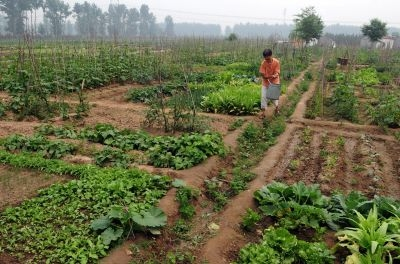
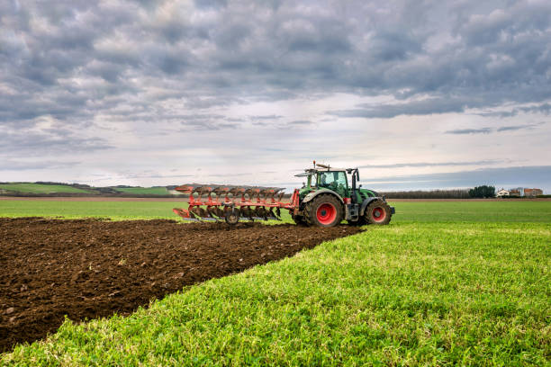
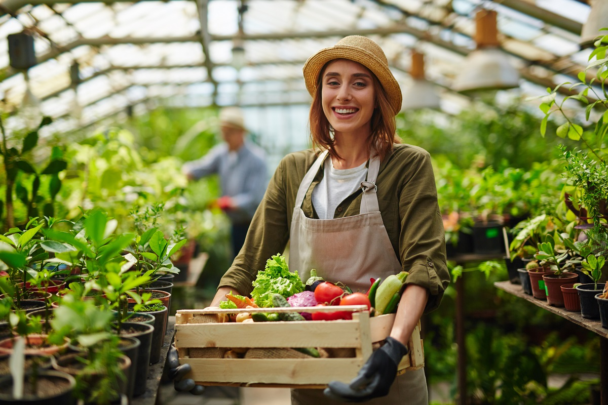
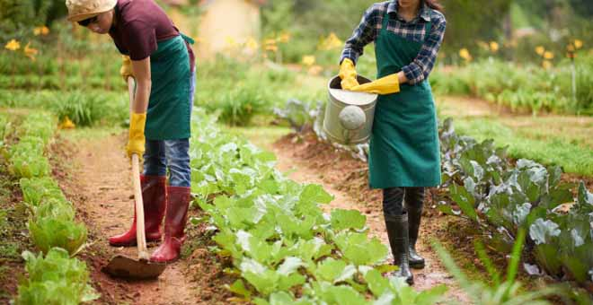
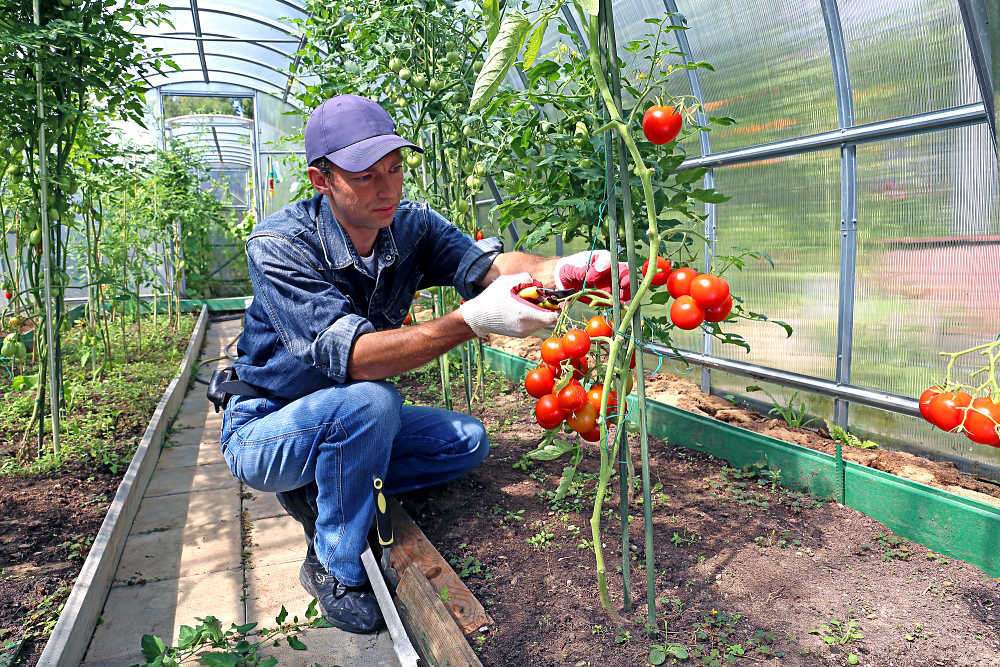
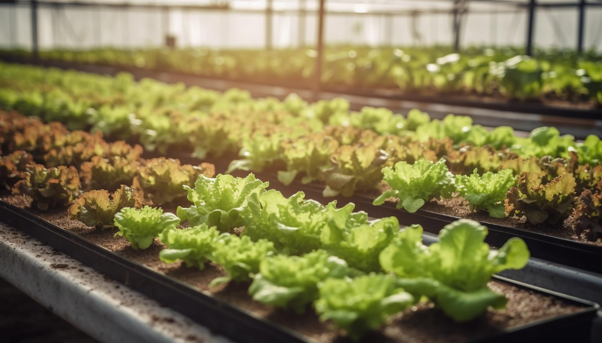
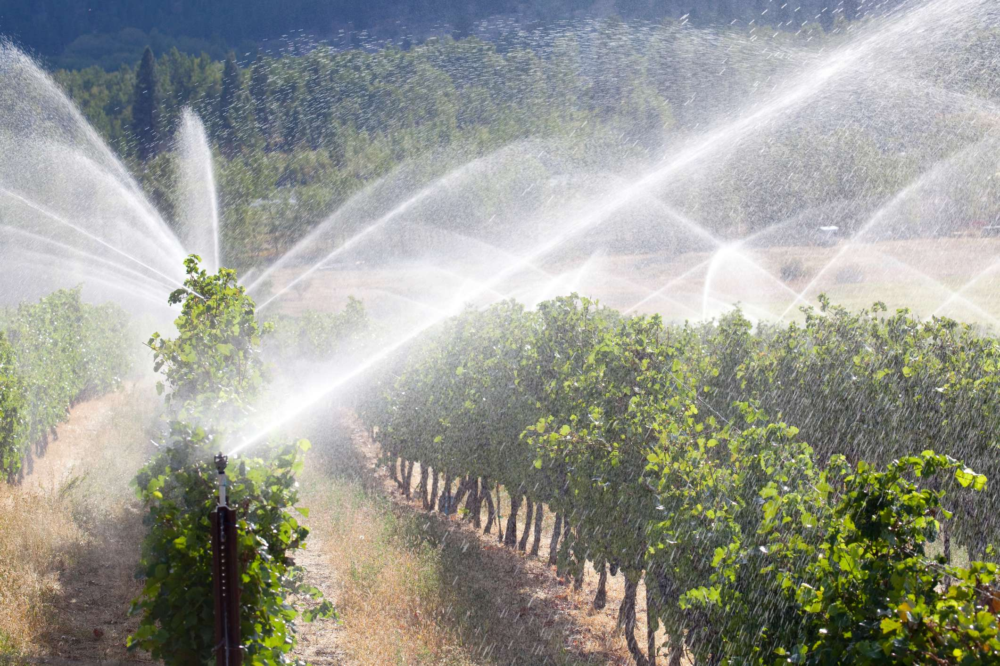
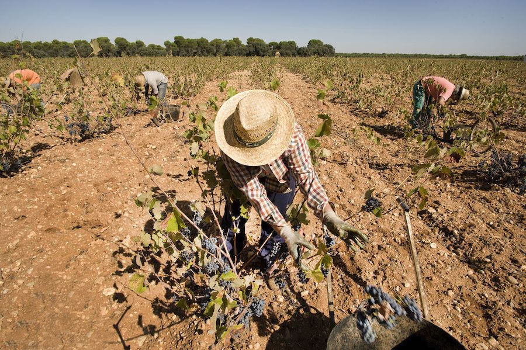
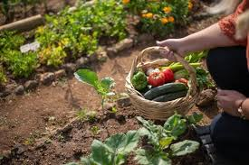

Agricultura
¿Qué es la agricultura y por qué es importante?
La agricultura es la actividad humana tendiente a combinar diferentes procedimientos y saberes en el tratamiento de la tierra, se define como “el arte de cultivar la tierra” proviene del latín ager, agri (campo) y cultura (cultivo). Es una actividad económica que se encuentra dentro del sector primario, se ocupa de la producción de cultivo del suelo,
el desarrollo y recogida de las cosechas, la explotación de bosques y selvas (silvicultura), la cría y desarrollo del ganado.
No solo es importante saber qué es la agricultura, sino que también tenemos que saber que la agricultura nos ayuda en muchos aspectos. La agricultura puede ayudar a reducir la pobreza, aumentar los ingresos y mejorar la seguridad alimentaria.
Tipos de Agricultura
Hay varias formas en las que se puede practicar la agricultura, por ello hay muchos tipos de agricultura y cada una tiene sus propias características. Se pueden clasificar según esas características para una mayor comprensión.
A continuación, se presentan algunos de los tipos de agricultura:
- Agricultura tradicional:

Se caracteriza por utilizar los procesos más tradicionales para cultivar alimentos, con herramientas manuales, animales y a veces vehículos pequeños. Lo más común es que sea a pequeña escala hecho con las técnicas aprendidas de una generación a otra. Se usan mucho las semillas y cultivos locales, utilizan productos fertilizantes para el control de las plagas como plaguicidas, pesticidas y herbicidas lo que provoca pérdida de calidad y fertilidad de los suelos, contaminación del suelo y un alto impacto ambiental.
- Agricultura industrial:

Es un método en el que se producen alimentos a gran escala, utiliza maquinaria más o menos automatizada y utiliza técnicas intensivas para obtener una amplia cosecha. Por esa razón los pesticidas, fertilizantes y otros aditivos que maximizan la producción son utilizados en este tipo de agricultura. Su aspecto negativo está en el uso excesivo de recursos, lo que puede significar un impacto ambiental. Los agricultores tratan de minimizar el impacto, aunque no todos lo logran, pero si te encuentras dentro de la industria de la agricultura puedes optar por estructuras y técnicas adecuadas para evitar un mal uso de los recursos.
- Agricultura de subsistencia:

La agricultura de subsistencia es un método de cultivo que se desarrolla para cubrir las necesidades de una comunidad o familia en específico. Tiene un nivel de producción bajo, no utiliza grandes extensiones de suelo y los cultivos no son para comercializarlos. Este sistema a pequeña escala ha funcionado por mucho tiempo y cualquier agricultor de subsistencia puede tener diversos cultivos cerca de su hogar o en espacios exclusivos para esto, también se hace crianza de animales y se producen diversos alimentos.
- Agricultura extensiva:

Aquí el agricultor trata de evitar el uso de cualquier producto químico y tecnológico, sobre todo para conservar el medioambiente y realizar un procedimiento más orgánico y tradicional. Se desarrolla en terrenos muy amplios y produce un gran volumen de alimentos, lo que permite tener una cosecha más rentable. En sus aspectos positivos está el bajo impacto que tiene en el suelo y que requiere pocos costos iniciales.
- Agricultura intensiva:

Es todo lo contrario de la extensiva, la producción de alimentos es en un espacio reducido de suelo, utilizando fertilizantes, insecticidas, aditivos, riegos por sistemas y maquinaria para sacar el mayor provecho posible. Utiliza todas las tecnologías y recursos externos. Su impacto en los suelos y el medio ambiente suele ser muy elevado, aprovecha todo el suelo fértil posible y requiere menos mano de obra al utilizar otro tipo de herramientas.
- Agricultura sin suelo:

Se considera como el grado más extremo de agricultura intensiva, no requiere de una superficie de suelo, sino que cultiva las plantas en instalaciones hidropónicas o aéreas. Utiliza mucho la tecnología, no tiene impacto en el suelo, pero consume enormes cantidades de energía.
- Agricultura de regadío:

La agricultura de regadío es aquella que utiliza un sistema de riego artificial de agua en los cultivos. El sistema ideal dependerá de las necesidades de cada siembra, se puede aprovechar el agua de lluvia, pero la misma se complementa con otro suministro. Tiene un costo mayor, ya que los agricultores necesitan invertir en sistemas de riego para cubrir toda la siembra. Involucra infraestructuras más complejas, mantenimiento y todos los gastos relacionados con las mismas. No obstante, sigue siendo muy usada.
- Agricultura de secano:

Esta trabaja con los tipos de cultivos que se desarrollan únicamente con la lluvia, no tienen ningún riego artificial. En esta agricultura se deben seleccionar cultivos y prácticas agrícolas que maximicen el uso del agua de lluvia y minimicen la pérdida de humedad en los suelos. La humedad necesaria para el cultivo es suministrada por las lluvias y por el suelo, sin intervención del agricultor, por eso se lleva a cabo en zonas donde ocurren precipitaciones.
- Agricultura ecológica:

A diferencia de la tradicional en esta no se utilizan ningún tipo de productos artificiales. Usa un procedimiento por medio del cual se trabaja la tierra y se cultiva usando sustancias naturales y orgánicas. Se considera favorable para el medioambiente porque su impacto es reducido. Entre sus principales objetivos se encuentra el poder ser responsable con la energía y los recursos naturales, mantener la biodiversidad y conservar la fertilidad del suelo entre muchos otros.
Historia de la Agricultura en Puerto Rico
En Puerto Rico, la agricultura siempre ha tenido un gran impacto, desde la época de los indígenas hasta la actualidad. Los taínos cultivaban yuca, maíz y batata, utilizando técnicas sostenibles que les permitían aprovechar la tierra sin agotarla. Con la llegada de los colonizadores españoles, la agricultura se transformó en una industria basada en el cultivo de caña de azúcar, café y tabaco, productos que impulsaron la economía de la isla durante muchos años. Sin embargo, con la industrialización y la urbanización, la producción agrícola disminuyó, y muchos conocimientos tradicionales sobre el cultivo se han ido perdiendo con el tiempo.
Hoy en día, la agricultura sigue siendo un sector importante de la economía puertorriqueña, especialmente en la producción de alimentos como el café, la piña y las hortalizas. Aunque enfrenta desafíos como el cambio climático y la falta de recursos, sigue siendo un motor clave para el desarrollo económico y la seguridad alimentaria en la isla.
Por eso, es fundamental transmitir el conocimiento de generación en generación. No solo nos permite entender cómo se hacían las cosas antes, sino también cómo podemos aplicarlas en el presente. Aprender esos trucos que nos enseñan las abuelas, como los remedios caseros para librarnos de una plaga en los cultivos o preparar un té medicinal, es invaluable. Estos son los conocimientos que debemos preservar. Debemos aprovechar cada oportunidad para aprender de quienes vinieron antes, de aquellos que trabajaron duro y acumularon saberes que hoy nos hacen tanta falta.